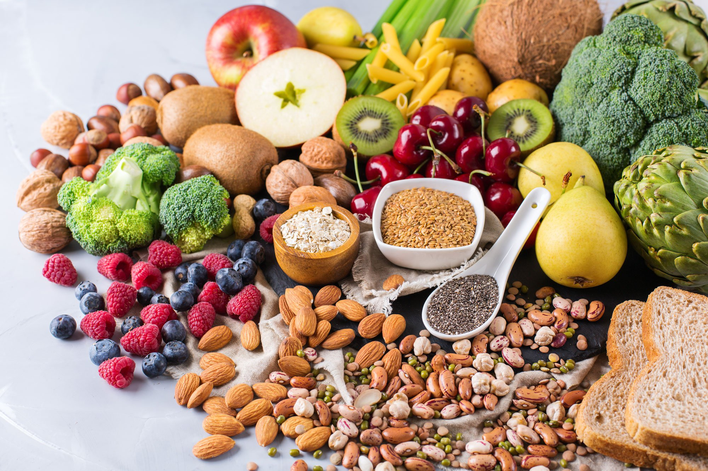

健康生活
我覺得健康的人一定要吃健康的食物。英文會說 "you are what you eat" 或你是你吃的東西。
我的健康生活話題是食物。食物對青少年很重要。青少年都在長大，所以吃健康的食物很重要。
我現在十二歲，上八年級。我和󠇡我的家人住在加州。我每天早上七點二十起床, 七點十四吃早餐, 八點開車去學校。

我覺得健康的人一定要吃健康的食物。英文會說 "you are what you eat" 或你是你吃的東西。
我的健康生活話題是食物。食物對青少年很重要。青少年都在長大，所以吃健康的食物很重要。
我現在十二歲，上八年級。我和󠇡我的家人住在加州。我每天早上七點二十起床, 七點十四吃早餐, 八點開車去學校。
